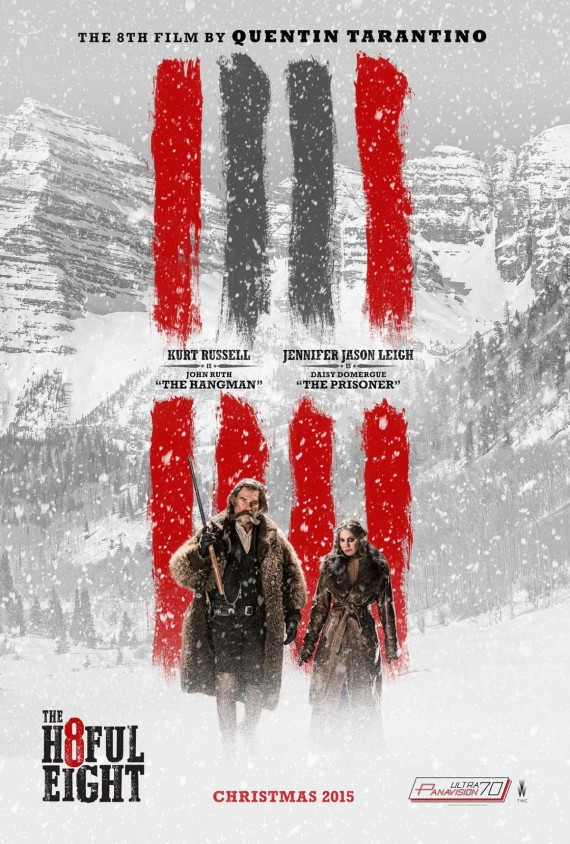

Pook's Pick

Hit or Shit

Hateful Eight

Tarintino. Not a usual single-word sentence, but for most people, that’s all they need to see or hear to determine if they love or hate the movie his name is attached to. Often, there is no in-between. That being said, let me make that one word sentence a little longer: Tarintino, three hours. Your reaction to that will tell you if you need to keep reading. Let me start by saying Quentin is a good director, just not great like most people think. It’s understandable that people like him. When you’re first discovering movies, Quentin is grade A cinema, and then you finish the eighth grade. So now that I’m done projecting my views on Quentin, let’s cover the projection of the movie. I saw the movie on its 70MM roadshow version in Birmingham, Alabama. Sure it looked good, but my main question: why? 90% of the movie takes place inside, in a single location. What was the point? It feels like a little bit of cinema-masturbation to me. Now let’s get into the movie itself. It’s close to three hours, or is over three hours if you see the roadshow version. The movie is an EXTREME slow burn. There is very little in the way of action until the last 20-30 minutes, when it proceeds to go full Terintino. That’s not really a bad thing, though. The movie is filled with lots of tension based purely on the dialogue interactions, which I prefer to mindless action anyways. The dialogue itself is usual Tarintino, snappy, broadly painted characters who are mostly one note, save one character in particular. The actors all do a great job with what they are given, and like I said earlier, the movie builds a lot of slow tension. The movie, at its colossal length subverts going on any adventurous routes and opts to instead end on a bloody, generic, safe ending. The Hateful Eight is another mostly by the numbers Tarintino movie with just enough tension and good acting to put it above his few most recent efforts. It is funny, thrilling and has a great atmosphere that is sometimes compromised by pacing issues. Just like with my Star Wars review: If you like Quentin’s other movies this will fall right in line with you. If you don’t, it won’t do you any favors. Highlights: Good acting, atmosphere is great, tension builds approximately Lowlights: Close to three hours when it doesn’t need to be, story plays it safe, feels a lot like Quentin’s other films.
 2nd Thoughts
2nd Thoughts
Ok let me start off with that this movie is loooooong, But I like Tarantino and saw the roadshow viewing which made it fairly easy to do. The film is building tension from the begining and after edging from almost 3 hours, it has a two piece load to blow and boy does it do it's job. No detail is left out from what I can tell, Tarantino is really good about that. In the end you're not left wondering why or what happen to who. I'm no film buff to say the least but I like the fact that he shot this in 70mm as it seems to have helped spark a renaissance for analog film. (STORY TIME) As me and the boys were leaving the theater we see this mid-length hair 20-somthing man walking towards the highway. So we ask him if he needed a ride to which he replies "Sure im just going to the Wyndham up the road." So he hops in and on the way there We find out he's the projectionist they sent out to run the 70mm film for our moive. Nice guy.